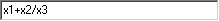
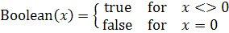

|
公式编辑器
|

公式编辑器（公式解析器）将代数表达式（文本）转换为计算机可以理解的操作堆栈。此公式解析器可以处理多种数学运算符和函数（见下文）。
执行顺序取决于运算符的优先级。虽然公式解析器使用浮点数，但某些运算符需要布尔值或整数值来操作。在这种情况下，浮点值会在操作前被转换。浮点数到整数的转换会截断小数位。
浮点数到布尔值的转换如下：

结果会转换回浮点数。布尔值 true 被转换为 1.0，布尔值 false 被转换为 0.0。
所有函数至少有 10 位有效小数位，但 besselj1() 和 airysqr() 函数除外，它们只有 7 位有效小数位。
根据使用情况，公式解析器接受固定数量 N 的输入变量。这些变量通过 X1, X2 ... Xn 来引用。
示例公式
|
x1+500 |
结果是原值加 500 |
|
x1>250 |
如果原值大于 250，结果为 1；如果小于 250，结果为 0 |
|
x1+x2 |
结果是 x1 和 x2 的和 |
|
x1*(x2>250) |
如果 x2 大于 250，结果是 x1 的原值，否则为零 |
运算符
|
优先级 |
运算符 |
描述 |
|
1 |
| |
或（布尔） |
|
2 |
& |
与（布尔） |
|
3 |
! |
不等于（布尔） |
|
4 |
= |
等于（布尔） |
|
5 |
> |
大于（布尔） |
|
6 |
< |
小于（布尔） |
|
7 |
- |
减（浮点） |
|
7 |
+ |
加（浮点） |
|
8 |
% |
取模（整数） |
|
9 |
* |
乘（浮点） |
|
9 |
/ |
除（浮点） |
|
10 |
- （代数符号） |
变号（浮点） |
|
11 |
^ |
幂（浮点） |
|
12 |
( ) |
括号（浮点） |
函数
|
函数 |
描述 |
|
sin() |
正弦（弧度） |
|
asin() |
反正弦（弧度） |
|
cos() |
余弦（弧度） |
|
acos() |
反余弦（弧度） |
|
tan() |
正切（弧度） |
|
atan() |
反正切（弧度） |
|
cotan() |
余切（弧度） |
|
sinh() |
双曲正弦 |
|
asinh() |
双曲反正弦 |
|
cosh() |
双曲余弦 |
|
acosh() |
双曲反余弦 |
|
tanh() |
双曲正切 |
|
atanh() |
双曲反正切 |
|
loge() |
自然对数 |
|
log10() |
以10为底的对数 |
|
log2() |
以2为底的对数 |
|
exp() |
指数 |
|
abs() |
绝对值 |
|
sqrt() |
平方根 |
|
sinc() |
sin(x)/x（弧度） |
|
sincsqr() |
(sin(x)/x) ^ 2 |
|
heavyside() |
x < 0 时为 0 | x = 0 时为 0.5 | x > 0 时为 1 |
|
sign() |
x < 0 时为 -1 | x = 0 时为 0 | x > 0 时为 1 |
|
besselj1() |
第一类 J1(x) 贝塞尔函数 |
|
airysqr() |
((2J1(x)) / x) ^ 2 |
|
pi() |
数学常数 PI（使用 "pi(0)"） |
被以下组件使用：